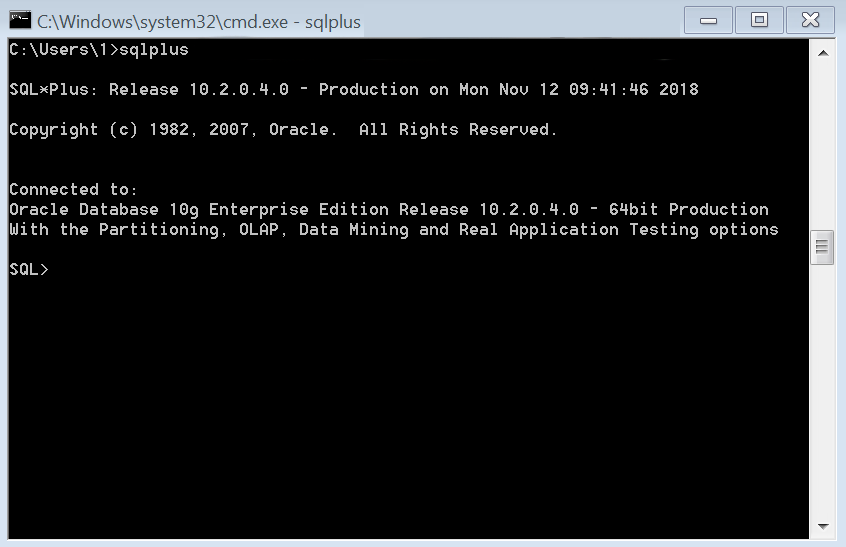

SQL*Plus 简介
Table of Contents
1 sqlplus
Oracle 的 sqlplus 是与 oracle 数据库进行交互的客户端工具，借助 sqlplus 可以查看、 修改数据库记录。在 sqlplus 中，可以运行 sqlplus 命令与 sql 语句。
1.1 从命令行中连接 sqlplus
第一种登录方式的命令如下
sqlplus username/password@hostname:port/service_id
登录过后可以看看成功的登录界面

第二种登录方式需要使用 tnsnames.ora 这种格式，下面是 Oracle Client 提供的默认 样本。
# This is a sample tnsnames.ora that contains the NET8 parameters that are
# needed to connect to an HS Agent
hsagent =
(DESCRIPTION=
(ADDRESS=(PROTOCOL=tcp)(HOST=localhost)(PORT=1521))
(CONNECT_DATA=(SID=hsagent))
(HS=)
)
熟悉了 tnsnames.org 这种格式后就可以编写相应的登录命令，具体方式如下：
sqlplus username/password@"(DESCRIPTION=(ADDRESS_LIST=(ADDRESS=(PROTOCOL=TCP)(HOST=hostname)(PORT=1521)))(CONNECT_DATA=(SERVER=DEDICATED)(SERVICE_NAME=service_id)))"
当命令中的密码字段中含义有 @ 字段时需要将 password 字段用双引号包起来，如下：
sqlplus user/\"my@password\"@hostname:port/service_id
1.2 sqlplus 启动配置 $ORACLE_HOME/sqlplus/admin/glogin.sql
在启动 sqlplus 时需要预先设置一些启动的基本配置，例如启动的每行显示的字符数量， 显示是否折行，分页大小配置等。下面是我常用的配置。
-- $ORACLE_HOME/sqlplus/admin/glogin.sql -- SET UNDERLINE OFF SET TAB OFF SET VERIFY OFF SET WRAP OFF SET LINESIZE 32767 SET PAGESIZE 0 SET TRIMOUT ON SET TRIMSPOOL ON
1.3 sqlplus 使用技巧
- 执行本地sql脚本: START filename 或者 @ filename
- 将SQL*Plus执行的命令存成本地文件: SAVE filename
- 装载本地sql脚本，但不立即执行: GET filename
- 执行最后一条 sql 语句: /
- 打印最后执行的sql语句: L
- 结果输出到文件: SPOOL filename
- 查看/修改SQL*Plus的环境变量: SHOW/SET variablename